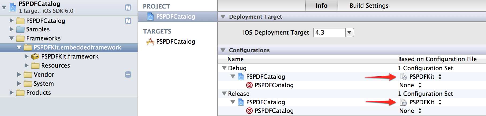
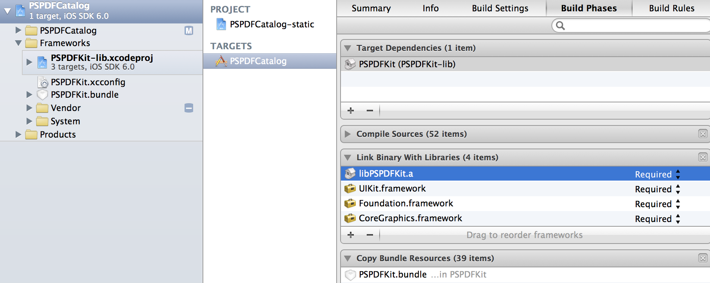
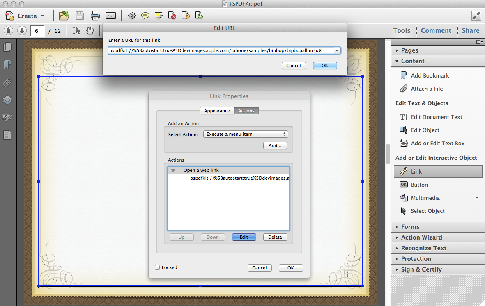

Class Documentation
You can integrate this into Xcode via adding following URL to your documentation feeds. (See Screenshot)
{kind=link}
http://download.pspdfkit.com/documentation/com.petersteinberger.PSPDFKit.atom
Integration
PSPDFKit compiles with Xcode ≥ 4.5.2 (iOS SDK ≥ 6.0 and Clang LLVM ≥ 4) and deploys all the way down to iOS 5.0.
Binary
Simply drag the "PSPDFKit.embeddedframework" folder into your Xcode project. You're almost done. Now enable the PSPDFKit.xcconfig as seen in this screenshot or add the required frameworks listed below. If you have custom values set in your project settings "Other Linker Flags", you need to clear that or merge the entries with the contents of PSPDFKit.xcconfig.
Source Code
If you have the source code and want to integrate PSPDFKit as a subproject, copy the PSPDFKit source folder into your repository and drag the PSPDFKit-lib.xcodeproj file into your project tree, add it as a dependency (choose PSDPFKit, NOT PSPDFKit Demo) and add the library to the "Link Binary with Libraries)" phase. Also add PSPDFKit.bundle and make sure it's in within "Copy Bundle Resource".
Also, in Build Settings, set the "User Header Search Paths" to "PSPDFKit" (The folder that you copied into your project folder) and check Recursive.
{kind=link}
Be sure to add the file ACKNOWLEDGEMENTS to your app resources to value 3rd party licenses.
Required frameworks are CoreText.framework, QuartzCore.framework, MessageUI.framework, libz.dylib, ImageIO.framework, CoreMedia.framework, MediaPlayer.framework, AVFoundation.framework, and the linker flags -ObjC and -fobjc-arc (only of you're not using ARC) (see QA1490 for details)
Usage
Open the PSPDFViewController with a simple call:
See PSPDFCatalog for a working demo. Note that while PSDPFDocument accepts a NSURL, only *local* PDF documents are supported. If you need to download them, look at the Kiosk example within PSPDFCatalog for some great example code.
Annotations
Beginning with PSPDFKit v2, all common annotation types are supported and displayed: Link, Highlight, Underscore, StrikeOut, Text, Ink, Square, Circle, Line, Note. These are the standard annotations (as defined in the PDF Reference) that can be read and written by many apps like Adobe Acrobat or even Apple's Preview.app.
PSPDFKit Annotate can edit and write the changes back into the PDF with following annotation types: Highlight, Underscore, StrikeOut, FreeText, Ink, Note. Annotations can only be written back into the PDF if the file is writeable. The default location (App Bundle) is readonly. Copy the PDF into your Documents folder (see "Test PDF annotation writing" in PSPDFCatalog) Optionally and as a fallback, annotations can also written as an external file. This is the default behavior if the PDF is readonly. This can be customized with changing annotationSaveMode Valid options are PSPDFAnnotationSaveModeDisabled, PSPDFAnnotationSaveModeExternalFile, PSPDFAnnotationSaveModeEmbedded, PSPDFAnnotationSaveModeEmbeddedWithExternalFileAsFallback (default)
Annotations are handled by the PSPDFAnnotationParser class. that exists once per PSPDFDocumentProvider. A PSPDFDocument contains one or more PSPDFDocumentProviders, depending on the amount of PDF files it contains (usually it's one). You can subclass PSPDFAnnotationParser to change way annotations are loaded and saved. (e.g. to provide a database-backed annotation saving/loading). If you want to change PSPDFAnnotationParser application-wide, the best way is to add an entry in the overrideClassNames dictionary of PSPDFDocument.
Per default, all supported annotation types can be edited/created. Make sure to add the annotationButtonItem to the toolbar to be able to show the annotation toolbar. With PSPDFDocument's editableAnnotationTypes you can customize what annotations can be edited. Set this to an empty array to disable annotation editing.
PSPDFCatalog contains many annotation examples, make sure to check them out.
Link Annotations
Link annotations are supported. Both page links and web/email links are fully supported, even unicode-URL's will work. (for example http://💩.la works). This is achieved with PSPDFKit integrating the IDNSDK, since iOS does not support this per default. With long-pressing on a link, a actionsheet/popover opens showing the destination.
Link Annotations to other PDF documents
PSPDFKit also supports link annotations to external documents. You can both use the Launch annotation type ("Open a file" in Acrobat). This annotation subtype doesn't support setting a page target, so page 0 will be used. Another option is using regular web link annotations ("Open a web link" in Acrobat). The same path resolving methods as with other link annotations are used. Use pspdfkit://localhost/PSPDFKit.pdf#page=3 to link to the file PSPDFKit.pdf at page 4. (pages start at 0 here)
Encryption
The default PDF password encryption is supported. If you open a PDF document that is password protected, PSPDFKit will show a password prompt to unlock. (This can also be disabled and/or the password can be set programmatically)
The Acrobat 3 And Later option uses a low encryption level (40‑bit RC4), while the other options use a high encryption level (128‑bit RC4 or AES). Acrobat 9.0 And Later encrypts the document using the AES encryption algorithm with a 256-bit key size. iOS including version 6 does not yet support the Acrobat 9.0+ style encryption.
PSPDFKit Annotate 2.1+ is able to add an additional layer of security with support for state-of-the-art fast, in-memory AES256 decryption using the PSPDFAESCryptoDataProvider (iOS5+) class. You can encrypt the whole file with a password+salt, and with using 50.000 PBKDF iterations it's well-protected against brute-force attacks (unlike solutions from Adobe). We also provide the "AESCryptor" Mac app that encrypts your PDF documents. Unlike NSData-based solutions, the PDF never is *fully* decrypted, and this even works with very large (> 100MB) documents. The file also will never be written out unencrypted to disk, and the cache is automatically disabled for encrypted content.
Logging
The log level can be set at runtime, from anywhere in your project. The default log level is PSPDFLogLevelWarning.
Localization
The PSPDFKit.bundle file contains localization for german, english and french. You can either add further localization via adding the corresponding folders, or (the preferred way) set new localization programmatically.
(Set before displaying PSPDFViewController, your AppDelegate is a good place)
To see all strings that should be localized, look inside PSPDFKit/PSPDFKit.bundle/en.lproj/PSPDFKit.strings. PSPDFKit uses [NSLocale preferredLanguages] to determine the language and falls back to english if this method doesn't return anything or the language is not available either in the PSPDFKit.bundle or the language dictionary. PSPDFKit will NOT look into your default project strings file.
Multimedia Overlay Features
PSPDFKit supports rich multimedia annotations. Those can be created with Mac Preview.app* or Adobe Acrobat. Create a URL annotation and use pspdfkit:// as the url scheme instead of http. The system will auto-detect the correct end correct point. Supported are:
- - Video (m3u8, mov, avi, mpg, m4v - formats that are supported by iOS) Both local and remote content is supported.
- - YouTube. (e.g. pspdfkit://youtube.com/watch?v=0DSCFQcR08E)
- - Audio (mp3, m4a, mp4)
- - Images (jpg, jpeg, png, (animated) gif, tiff, tif, bmp, bmpf, cur, xmb)
- - Inline Web Pages
- - Modal Web Pages (e.g. pspdfkit://[modal:YES,size:500x500]http://apple.com. Size is optional and only honored on iPad. Inline Web Browser can also enabled with changing linkAction in PSPDFViewController.
- - Any custom UIView with using the delegate methods.
For example, pspdfkit://devimages.apple.com/iphone/samples/bipbop/bipbopall.m3u8 will show the Apple HTTP Live streaming test page. There are delegate methods if you need more control. (like manually setting auto play, adding custom annotations)

Note: The %5B and %5D are just encoded and stand for [ and ].
If you want to display local files, use pspdfkit://localhost/file.xy. The Path is automatically set to the same path as the displayed PDF. Supported folders include Bundle, Documents and Cache - but you can easily extend that to support custom folders.
Video Options
- - autostart: starts the video as soon as the page is displayed (e.g. pspdfkit://[autostart:true]devimages.apple.com/iphone/samples/bipbop/bipbopall.m3u8)
- - cover: displays a custom play button with the cover image. If you just need the play button without a background image, use cover : "". Cover uses the same path resolving like the multimedia link annotation system (http://website or /localhost/Bundle/image.jpg). Note: autostart:true will override the cover setting.
- - offset: will start the video at a specific time in seconds. (e.g. pspdfkit://[offset:10]devimages.apple.com/iphone/samples/bipbop/bipbopall.m3u8)
Note: YouTube-Links are not displayed as a inline-thumbnail on the iPhone if the PSPDFViewController is displayed modally. This is a workaround for a known Apple bug, where the UINavigationController breaks after the control returns from fullscreen.
(*) Starting with Mountain Lion, the URL linking feature in Preview.app has been removed. Either use Adobe Acrobat or PDFpen.
Troubleshooting
Q: How do I determine what version of PSPDFKit I am using?
A: Simply open PSPDFKit.embeddedframework/Resources/VERSION. Alternatively, you can query the version at runtime with calling PSPDFVersionString().
Q: I purchased PSPDFKit. Where can I download the latest version?
A: Use the link you got in your initial purchase email, it always points to the latest stable version available. (You might need to update the links if it's an older purchase, see above)
Q: I upgraded from Demo to Binary/Source, but the "PSPDFKit-Demo" text doesn't disappear.
A: You have either delete your app on the Simulator/Device or explicitly call [[PSPDFCache sharedCache] clearCache] to remove the demo text. Also be sure to check your linker settings, so that you don't accidentally link a demo version of the framework. Keep in mind that the distribution will contain both the demo binary (in PSPDFKit-Demo) and the full binary in the "Products" folder.
Q: I downloaded the project but saving annotations doesn't work.
A: PDF files in the Bundle directory (Resources, app folder) are not writeable. Copy your PDF to a writeable directory like Documents to test the annotation embedding. Annotation embedding is also disabled for encrypted files.
Q: Help! I get "PSPDFKit.bundle not found. search and annotations will not work properly" in the log.
A: You need to add the PSPDFKit.bundle to your project. If you're using the source code PSPDFkit-lib.xcodeproj, drag the PSPDFKit.bundle into Xcode's tree - anywhere you want (Resources folder is a good place). If you're using Appcelerator, read up here how to add it.
Q: When I start the app, I get [__NSArrayI objectAtIndexedSubscript:]: unrecognized selector sent to instance.
A: You're most likely on Xcode 4.3. Upgrade to 4.5 or later to fix this problem. Also ensure you've added the linker flag -fobc-arc to your project.
Q: The document doesn't show up, instead I get "Error: CFURLCreateDataAndPropertiesFromResource: failed with error code -15" in the debug log.
A: You need to initialize PSPDFDocument with a *file* URL or a URL from localhost. Remote URLs are not supported - download the PDF first, for example with AFDownloadRequestOperation, as used in the PSPDFCatalog.
Q: When I start the app, I get "_OBJC_CLASS_$_UICollectionView", referenced from: objc-class-ref in PSPDFKit
A: You're most likely on Xcode 4.4. Upgrade to 4.5 or later to fix this problem. PSPDFKit will use the native UICollectionView if the device is on iOS6, and PSTCollectionView on iOS5.
Q: Everything works perfectly, but when I use PDF XYZ, your application crashes (this only happens on the device)
A: While there are many ways in place to minimize memory usage when rendering is working, some PDF are just _too complex for iOS - meaning drawing takes too much memory. There is a hard limit of about 64MB for every application, and you most likely get killed by the system before getting that much anyway, especially on older devices like the iPad 1. While testing, we encountered PDFs that needed as much as 300MB for drawing - no way you can to this on iOS. One way to fix this problem is to remove complex vector graphics, simple re-saving it in Preview.app solves many issues.
Q: The PDF is fine in Adobe Acrobat (R), but there are missing images/fonts on the iPad.
A: On iOS, the Quartz-Render-Engine is used. While overall very compatible, there are some differences in interpreting the >1000-pages pdf reference. And some newer variants may not be implemented at all. Because Apple shares most of their foundation code, please check your pdf in Preview.app first. If there are rendering problems, open it in Adobe Acrobat and re-save it File -> Save as... -> Reduced Size PDF, and select under "Make compatible with" an earlier PDF version. We had good experiences with 4.0 or 5.0. Note: File size may increase because of the older format.
If you experience problems with transparency (differences between Apple's rendering engine and Adobe's), it's also worth trying the highest possible version. One customer reported good results using PDF/X4-2008 and Acrobat 8/9 (PDF 1.7). There are also some reports that iOS6 fixes a lot of those problems.
Q: The colors on then iPad are a bit off; But everything looks fine in Adobe Acrobat
A: Apple doesn't always respect color spaces in their PDF rendering engine. You can solve this by converting the document colors to either sRGB or Apple RGB in Acrobat.
Q: I've added the printBarButtonItem but it's not showing up in the toolbar.
A: Certain PDF documents might now allow printing. To check this, check the allowsPrinting flag on PSPDFDocument.
Q: In Adobe Acrobat, hyperlinks are clickable, but in PSPDFKit, some or all of them are not marked as touch-able.
A: Adobe Acrobat and to some extend also Preview.app use custom in-text hyperlink detection to create annotations on the fly. This is nothing the PDF references specifies, and is also currently not supported my PSPDFKit. As a workaround, make proper link annotations out of your hyperlinks. This can be accomplished easily with Adobe Acrobat or Preview.app.
Q: When I use the source, there are compile errors/warnings.
A: You most likely use and old Xcode and/or compiler. PSPDFKit is designed for Xcode ≥ 4.5.2 (with iOS SDK ≥ 6) and LLVM/Clang.
If you get linker errors about missing symbols, be sure that your project includes the above listed frameworks and the linker flags -ObjC and -fobjc-arc.
Also, check that you correctly included the combined header file PSPDFKit.h. When using the framework, add '#import
Q: Is PSPDFKit AppStore-safe?
Yes. There is some careful use of private API that _can_ be used in DEBUG mode (e.g. for memory debugging), but that's automatically compiled out in non-debug builds. There are lots of apps in the store using PSPDFKit, like this one.
Q: Do I need to buy another license to make a second app?
A: Yes, the license is per app bundle id. If you're already a customer, email us to get a coupon for a discounted second license. You'll find more FAQ on the purchase page.
Q: How do I change the link-color of PDF annotation links?
A: Use PSPDFViewControllerDelegate like this:
Q: For books, we have pages that need to be labeled with roman numbering (i, ii, iii, iv, ...). How can I customise the page number?
A: You can use PDF Page Labels which are fully supported by PSPDFKit. Use Adobe Acrobat, open the thumbnail view, right click on a page and choose "Number Pages..." to customize page numbering. Page labels will be displayed everywhere (thumbnails, popover, page label view) instead of the logical page number if they are defined.
Q: I am looking for following features: adjust PDF text size/font style/ page margins.
A: This is not possible due to the nature of PDF. There's no notion of "word" or sentence. With great hacking and rewriting your renderer, you could increase the font size, but all letters would just overlap. Then there's a chance that some letters aren't even letters as you would think of, but just vector curves. You are probably looking into HTML/ePub, where you can change such values with ease.
Appcelerator Titanium Module
PSPDFKit is also available as an Appcelerator Titanium Module. See the in the module included app.js for working example code. Note that currently only a practical subset of the features of the ObjC-Version are exposed via the JavaScript bridge. This will be expanded on a need-basis. All available features are listed in the examples/app.js supplied with the module.
You need to have at least Xcode 4.5.2 installed and the latest available versions of Titanium Studio (≥ 2.1.4.GA) and the Titanium SDK. If you're getting errors like "unrecognized selector sent to instance", chances are high that your Xcode is too old.
You install the plugin via copying com.pspdfkit.source-iphone-xxx.zip (where xxx is the version number) to /Users/USERNAME/Library/Application\ Support/Titanium/ (where USERNAME is your mac user name). Note that on some installations, Titanium might be installed on root, then the target folder is /Library/Application\ Support/Titanium/.
Just copy the zip and then start Titanium Studio. Select tiapp.xml and press the [+] on Modules. Select com.pspdfkit (or.com.pspdfkit.source; depending on the version you downloaded). if pspdfkit doesn't appear, try to run your application and re-do the Module add step.
You also need to add "PSPDFKit.bundle" to your resources. You'll find it at /Users/USERNAME/Library/Application\ Support/Titanium/modules/iphone/com.pspdfkit.source/VERSIONNUMBER/example/PSPDFKit.bundle. Drop the whole PSPDFKit.bundle folder into the Resources/iphone folder of your Appcelerator project.
{kind=link}
To deploy your project to the device, you need to manually remove any armv6 references in the generated Xcode project and raise the minimum deployment target to at least iOS 5.0. You can also modify the Appcelerator file yourself, as it's pretty unlikely that you still want to generate files that run on iOS 4.2. Open /Users/USER/Library/Application\ Support/Titanium/mobilesdk/osx/2.1.3.GA/iphone/builder.py, search for "extra_args = ["VALID_ARCHS=armv7 armv7s i386"]" and change this to "extra_args = ["VALID_ARCHS=armv7 i386"]". Also search for "min_ver = 4.0" and change this to "min_ver = 5.0". This second solution has the advantage of not needing to modify the Xcode project every single time you build.
License
By purchasing or integrating PSPDFKit, you or the entity or company that you represent are unconditionally agreeing to be bound by the terms and are becoming a party to the Terms. IF YOU DO NOT AGREE TO THE TERMS, YOU MAY NOT USE PSPDFKit, IN WHOLE OR IN PART.
Evaluation License The following license applies to the free trial versions of the software components. Copyright (c) 2010-2013, Peter Steinberger All rights reserved. Redistribution of this software, in either source or binary form is prohibited. Use of this software is permitted under the following conditions: * The software is used for evaluation purposes, with a view to purchasing a commercial development license. OR * The software is used for non-commercial educational purposes. In all cases, the software's object code may not be submitted to Apple's App Store * You do not remove or modify the "PSPDFKit Demo" watermark in any way. This software is provided by Peter Steinberger "as is" and any express or implied warranties, including, but not limited to, the implied warranties of merchantability and fitness for a particular purpose are disclaimed. In no event shall Peter Steinberger be liable for any direct, indirect, incidental, special, exemplary, or consequential damages (including, but not limited to, procurement of substitute goods or services; loss of sue, data or profits; or other business interruption) however caused and on any theory of liability, whether in contract, strict liability, or tort (including negligence or otherwise) arising in any way out of the use of this software, even if advised of the possibility of such damage. Commercial Development License The following license applies to software components purchased and paid for in full. Copyright (c) 2010-2013, Peter Steinberger All rights reserved. The license your purchased, unless otherwise negotiated in writing, is valid for one explicit app ID, thus one iOS application. If you are distributing your app via a custom distribution system (not Apple's public App Store), you need one license per distribution per company (e.g. Enterprise App Store), even if you're using the same app ID for those versions. Redistribution and use of this software is permitted in binary form under the following conditions: * The software must be distributed only as part of a larger original work by the licensee; verbatim redistribution of the software as licensed is prohibited. * The software may only be distributed as a software application readily executable by end users on designated devices designed by Apple Inc. running the iOS operating system. Redistributing the software in re-linkable "library" form is explicitly prohibited. * The software's binary object code must be statically linked to the application to form a single binary file. * No source or header files may be redistributed. * Neither the names PSPDFKit or Peter Steinberger, nor the names of its contributors may be used to endorse or promote products derived from this software without specific prior written permission. * The license has not been terminated by licensee. * The licensee has separately licensed the required "iOS SDK" software from Apple Inc. Redistribution and use of the software is permitted in binary and/or source form under the following conditions: The recipient has purchased a separate, independent license for the software from Peter Steinberger. The redistributed software is governed by that license. Any modifications to the software by the licensee are to be marked clearly as such. With purchasing this software you agree to allow Peter Steinberger or any future maintainer of PSPDFKit to list your company and company products that include PSPDFKit on our product website and related material. This is also valid if the license is purchased through a 3rd party. An additional fee can be paid if you do not want this endorsement. Peter Steinberger reserves the right, in his sole discretion to modify this Agreement at any time. With downloading and integrating updated versions of PSPDFKit, you agree to the respectively latest version of this Agreement. You shall be responsible for reviewing and becoming familiar with any such modification. This software is provided by Peter Steinberger "as is" and any express or implied warranties, including, but not limited to, the implied warranties of merchantability and fitness for a particular purpose are disclaimed. In no event shall Peter Steinberger be liable for any direct, indirect, incidental, special, exemplary, or consequential damages (including, but not limited to, procurement of substitute goods or services; loss of sue, data or profits; or other business interruption) however caused and on any theory of liability, whether in contract, strict liability, or tort (including negligence or otherwise) arising in any way out of the use of this software, even if advised of the possibility of such damage. IN THE EVENT THAT ANY EXCLUSION CONTAINED IN THIS EULA SHALL BE HELD TO BE INVALID FOR ANY REASON AND THE COMPONENT PROVIDER BECOMES LIABLE FOR LOSS OR DAMAGE THAT MAY LAWFULLY BE LIMITED, SUCH LIABILITY SHALL BE LIMITED TO THE GREATER OF THE PRICE PAID TO THE COMPONENT PROVIDER FOR THE COMPONENT AND EURO 20. Unless the parties have entered into a written amendment to this agreement that is signed by both parties regarding PSPDFKit, this Agreement constitutes the entire agreement between Licensee and Peter Steinberger pertaining to the subject matter hereof, and supersedes any and all written or oral agreements with respect to such subject matter. This Agreement, and any disputes arising from or relating to the interpretation thereof, shall be governed by Austrian law. If any provision of this Agreement is held to be unenforceable for any reason, such provision shall be reformed only to the extent necessary to make it enforceable. The failure of Peter Steinberger to act with respect to a breach of this Agreement by Licensee or others does not constitute a waiver and shall not limit Peter Steinberger rights with respect to such breach or any subsequent breaches. This Agreement is personal to Licensee and may not be assigned or transferred for any reason whatsoever (including, without limitation, by operation of law, merger, reorganization, or as a result of an acquisition or change of control involving Licensee) without Peter Steinberger prior written consent and any action or conduct in violation of the foregoing shall be void and without effect. Peter Steinberger expressly reserves the right to assign this Agreement and to delegate any of its obligations hereunder. Last updated January 11, 2013